¿De qué se trató el Mundial de 1934?
La Copa Mundial de la FIFA 1934 fue la segunda edición del torneo y marcó un importante paso en la consolidación del campeonato como la mayor competencia internacional de fútbol. A diferencia de la edición anterior, contó con una mayor participación de selecciones y despertó un gran interés en distintos países.
Este Mundial introdujo un formato de eliminación directa desde el inicio, haciendo que cada partido fuera decisivo. Además, reflejó el crecimiento del fútbol en Europa y contribuyó a que la Copa del Mundo comenzara a ganar prestigio y reconocimiento a nivel internacional.
La edición de 1934 demostró que el Mundial tenía un futuro prometedor y ayudó a fortalecer una tradición deportiva que, con el paso de las décadas, se convertiría en uno de los eventos más importantes y seguidos del mundo.
Informacion que tenes que saber
Info general
- Pais Anfitrion: Italia
- Fecha de Inicio: 27 de Mayo de 1934 (27/05/1934)
- Fecha de Finalizacion: 10 de junio de 1934 (10/06/1934)
- Duracion: 15 dias
- Organizador: FIFA
- Edicion: II
Estadisticas
- Partidos jugados: 17
- Goles anotados: 70
- Promedio de gol: 3,89
- Maximo Goleador: Oldřich Nejedlý (5 goles)
- Final:
Italia 2-1 Checoslovaquia (en la prórroga)
info de la Ciudad
- Ciudades Sedes: 8
- Selecciones Participantes: 16
- Estadios Utilizados: 8
- Estadio Principal: Stadio Nazionale PNF (Roma)
Podio |
||||
|---|---|---|---|---|
| Posicion | Seleccion | Bandera | ||
| 1º Puesto | Italia |  |
||
| 2º Puesto | Checoslovaquia |  |
||
| 3º Puesto | Alemania |  |
||
| 4º Puesto | Austria |  |
||
Historia completa de la Copa Mundial de la FIFA 1934
La Copa Mundial de la FIFA de 1934 fue la segunda edición del torneo y se disputó en Italia entre el 27 de mayo y el 10 de junio de 1934. Fue la primera Copa del Mundo organizada en Europa y contó con la participación de 16 selecciones. El campeonato se desarrolló en un contexto político marcado por el régimen fascista de Benito Mussolini, que utilizó el torneo como una herramienta de propaganda para mostrar la fortaleza y modernidad de Italia ante el mundo.
A diferencia del Mundial de 1930, el interés por participar aumentó notablemente, por lo que la FIFA organizó por primera vez una fase clasificatoria. Incluso Italia, como país anfitrión, tuvo que disputar una eliminatoria frente a Grecia para obtener su lugar en el torneo, siendo el único organizador en la historia que debió clasificarse. En contraste, Uruguay, campeón del mundo en 1930, decidió no participar como protesta por la ausencia de varias selecciones europeas en la primera Copa del Mundo.
Desarrollo del torneo
El Mundial abandonó el sistema de grupos utilizado en 1930 y adoptó un formato de eliminación directa desde los octavos de final. Si un partido terminaba empatado, se disputaba una prórroga y, de persistir la igualdad, un encuentro de desempate, ya que todavía no existían las tandas de penales.
Uno de los encuentros más recordados fue el enfrentamiento entre Italia y España en los cuartos de final. El primer partido terminó 1-1 tras un duelo extremadamente físico, por lo que fue necesario jugar un desempate al día siguiente. Italia ganó ese segundo encuentro por 1-0 frente a una selección española muy afectada por las lesiones sufridas en el primer partido.
En las semifinales, Italia venció 1-0 al famoso "Wunderteam" de Austria, mientras que Checoslovaquia derrotó a Alemania por 3-1 gracias a la destacada actuación de Oldřich Nejedlý, máximo goleador del torneo con cinco tantos.
La gran final
La final se disputó el 10 de junio de 1934 en el Stadio Nazionale PNF de Roma ante aproximadamente 55.000 espectadores. Checoslovaquia abrió el marcador a los 71 minutos mediante Antonín Puč, pero Italia reaccionó rápidamente e igualó gracias a Raimundo Orsi a los 81 minutos.
El partido se extendió hasta la prórroga, donde Angelo Schiavio convirtió el gol del triunfo a los 95 minutos. Con la victoria por 2-1, Italia obtuvo su primera Copa Mundial y se convirtió en la segunda selección campeona de la historia, iniciando una etapa de dominio que continuaría con el título conseguido en Francia 1938.
⚽ Pelota Oficial del Mundial 1934
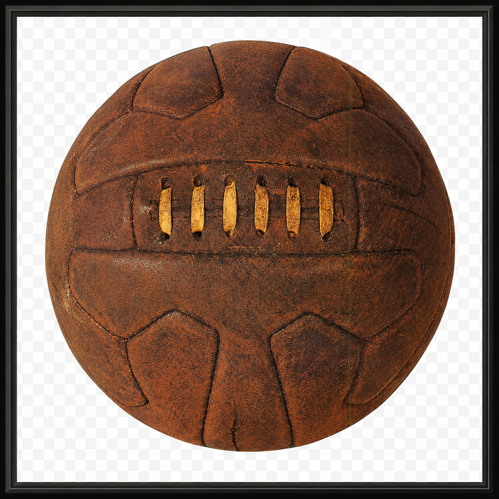
ALLEN
La Allen fue la pelota oficial utilizada durante la Copa Mundial de la FIFA Italia 1934. Fue fabricada en cuero marrón cosido a mano y representó una mejora en la calidad de los balones utilizados hasta ese momento.
Información General
Nombre: Allen
Fabricante: Allen (Italia)
Material: Cuero cosido a mano
Color: Marrón
Sistema de cierre: Cordones
Torneo: Copa Mundial FIFA Italia 1934
Características
- Cuero grueso cosido a mano.
- Balón resistente para la época.
- Cámara de goma en su interior.
- Utilizado durante todo el Mundial de 1934.
Dato curioso
Fue uno de los primeros balones en alcanzar una fabricación más uniforme, ayudando a mejorar el rendimiento durante los partidos.
Selecciones Participantes
Para el Mundial de 1934, Italia envió invitaciones a federaciones de Europa, América, África y Asia para completar 16 plazas. Debido a que se inscribieron 32 selecciones, se realizó por primera vez una fase clasificatoria.
America Del Norte
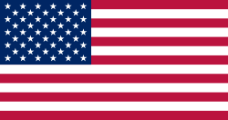
Estados Unidos Mexico
Mexico America Del Sur
 Argentina
Argentina  Brasil
Brasil Africa
 Egipto
Egipto Europa
Alemania  Belgica Checoslovaquia
Belgica Checoslovaquia  España
España  Francia
Francia  Hungria Italia
Hungria Italia 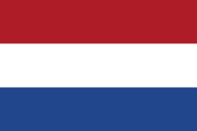
Paises Bajos Rumania
Rumania  Suecia
Suecia  Suiza
Suiza
Dato:
Las selecciones del Reino Unido (Inglaterra, Escocia, Gales e Irlanda del Norte) rechazaron participar debido a sus diferencias con la FIFA.
Sedes y Estadios |
||||
|---|---|---|---|---|
| El torneo se descentralizó por completo a diferencia de 1930 (donde todo se jugó en una sola ciudad) y se distribuyó en ocho estadios históricos a lo largo de Italia | ||||
| Nombre del Estadio | Estadio | Descripción | Espectadores aprox. | Partidos Juagdos aprox. |
Stadio Nazionale PNF (Roma) |
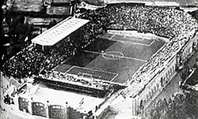 |
Fue el estadio principal y sede de la final | 55.000 espectadores | 3 |
Stadio San Siro (Milan) |
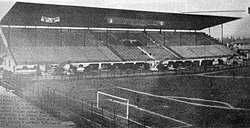 |
Sede de una de las semifinales | 55.000 espectadores | 3 |
Stadio Giovanni Berta (Florencia) |
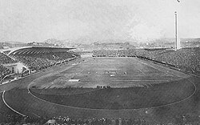 |
Escenario del polémico duelo entre Italia y España | 45.000 espectadores | 3 |
Stadio Benito Mussolini (Turin) |
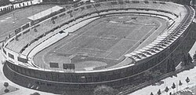 |
El Estadio Olímpico Grande Torino es un estadio multiuso ubicado en la ciudad de Turín, Italia | 65.000 espectadores | 2 |
Stadio Litoriale (Bologna) |
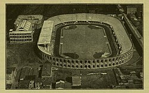 |
El Estadio Renato Dall'Ara es un estadio mundialista de fútbol, situado en la ciudad de Bolonia, capital de la región de Emilia-Romaña en Italia | 50.000 espectadores | 2 |
Stadio Giorgio Ascarelli (Napoli) |
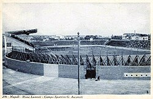 |
Albergó el partido por el tercer puesto | 40.000 espectadores | 2 |
Stadio Luigi Ferraris (Genova) |
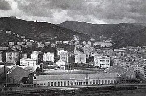 |
El Estadio Luigi Ferraris es un estadio de fútbol, situado en el suburbio de Marassi, en la ciudad de Génova, capital de la Liguria en Italias | 30.000 espectadores | 1 |
Stadio Littorio (Trieste) |
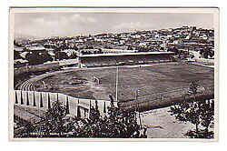 |
El Estadio Giuseppe Grezar, era un estadio multipropósito, pero principalmente dedicado a la práctica del fútbol, situado en la ciudad de Trieste, capital de la Región de Friuli-Venecia Julia | 25.000 espectadores | 1 |
Arbitros de la Copa Mundial de la FIFA 1934 por pais
| Arbitros | Pais |
|---|---|
| Louis Baert | |
| Rinaldo Barlassina | |
| Francesco Mattea | |
| Alois Beranek | |
| Alfred Birlem | |
| Ivan Eklind | |
| Pedro Escartín | |
| René Mercet | |
| Johannes van Moorsel | |
| Mihály Ivanicsics | |
Goleadores del Mundial 1934
Los goleadores fueron los jugadores que más tantos marcaron durante el torneo, destacándose por su capacidad para definir y ser decisivos en los partidos. Gracias a sus actuaciones, ayudaron a sus selecciones a avanzar en la competencia y dejaron una huella en la historia del segundo Mundial de la FIFA. A continuación se muestran los máximos anotadores del campeonato y la cantidad de goles que convirtió cada uno.
| Bandera | Jugador | Pais | Goles |
|---|---|---|---|
|
Oldřich Nejedlý | Checoslovaquia | 5 |
 |
Edmund Conen | Alemania | 4 |
 |
Angelo Schiavio | Italia | 4 |
 |
György Sárosi | Hungria | 4 |
|
Edmund Binder | Austria | 3 |
⭐ ¿Qué es el Equipo Estelar? ⭐
El Equipo Estelar es una selección de los mejores jugadores del Mundial, elegidos por su rendimiento a lo largo del torneo. No es un equipo que haya competido junto, sino un reconocimiento a los futbolistas que más se destacaron en sus respectivas posiciones.
| Bandera | Jugador | País | Posición |
|---|---|---|---|
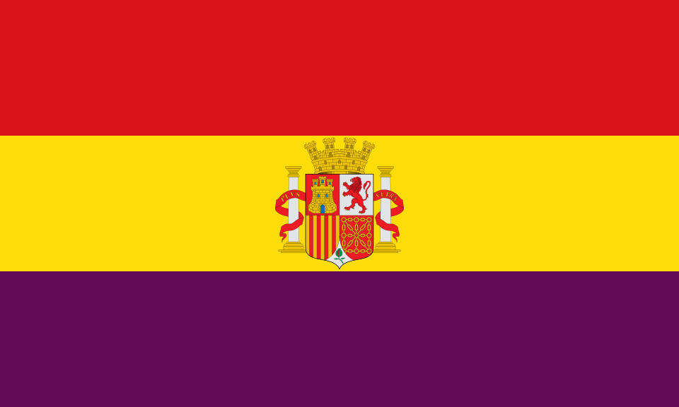 |
Ricardo Zamora | España | Arquero |
|
Eraldo Monzeglio | Italia | Defensor |
| Jacinto Quincoces | España | Defensor | |
| Leonardo Cilaurren | España | Mediocampista | |
|
Attilio Ferraris | Italia | Mediocampista |
|
Luis Monti | Italia | Mediocampista |
|
Enrique Guaita | Italia | Delantero |
|
Giuseppe Meazza | Italia | Delantero |
|
Oldřich Nejedlý | Checoslovaquia | Delantero |
|
Raimundo Orsi | Italia | Delantero |
|
Matthias Sindelar | Austria | Delantero |
Resumen del torneo — Copa Mundial de la FIFA 1934
Fase de Grupos
La fase de grupo es Inexistente. El torneo se jugó directamente por eliminación directa (K.O.) empezando en octavos de final.
El Cuadro de Desarrollo
Octavos de Final
Italia 7 Brasil 1 Hungria 4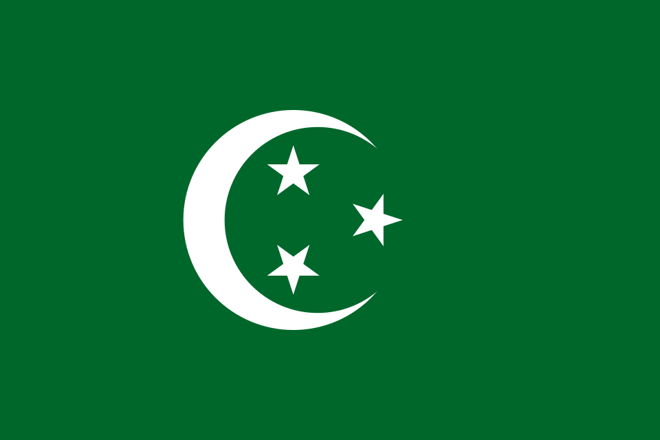
Egipto 2 Austria 3 Francia 2 Suiza 3 Checoslovaquia 2 Rumania1 Suecia 3 Argentina 2 Alemania 5 Belgica 2Cuartos de Final
Italia 1 Austria 3 Hungría 2 Checoslovaquia 2 Suiza 1 Alemania 2 Suecia 1Semifinales
Italia 1 Austria 0 Checoslovaquia 3 Alemania 1Final
Italia 2 Checoslovaquia 1Partido por el Tercer Lugar
Alemania 3 Austria 2Controversias de la Copa Mundial de la FIFA 1934
La Copa Mundial de la FIFA 1934 es considerada una de las ediciones más polémicas de la historia. El torneo estuvo marcado por la influencia política del régimen fascista italiano, decisiones arbitrales muy cuestionadas y otras situaciones que generaron críticas tanto en su época como en los años posteriores.
-
La influencia del fascismo
El dictador italiano Benito Mussolini utilizó el Mundial como una herramienta de propaganda para demostrar el poder y la imagen de Italia ante el mundo. Aunque no existen pruebas definitivas de que eligiera personalmente a los árbitros, durante décadas surgieron acusaciones de que el gobierno ejerció presión sobre la organización y los jueces para favorecer a la selección italiana.
-
Arbitrajes muy cuestionados
Uno de los casos más recordados ocurrió en los cuartos de final entre Italia y España. El primer encuentro fue muy violento y el árbitro permitió numerosas faltas sin sancionarlas adecuadamente. Debido al empate, se disputó un partido de desempate al día siguiente, en el que varias decisiones arbitrales favorecieron a Italia, incluyendo la anulación de goles españoles. Estas actuaciones provocaron fuertes críticas y alimentaron las sospechas sobre la imparcialidad del torneo.
-
Los "oriundi"
Italia contó con varios futbolistas nacidos en Sudamérica, principalmente en Argentina, conocidos como oriundi. Estos jugadores tenían ascendencia italiana y podían representar legalmente al país según el reglamento de la FIFA. Sin embargo, su convocatoria generó un intenso debate sobre la identidad nacional y la representación de las selecciones.
-
Un Mundial bajo presión política
Más allá de los resultados deportivos, el torneo quedó marcado por el contexto político de la época. Muchos historiadores consideran que la presión del régimen fascista sobre la organización influyó en el ambiente del campeonato, convirtiéndolo en uno de los Mundiales más discutidos y controvertidos de la historia del fútbol.
Tabla de Rendimiento y Posiciones Finales
| Posicion | Seleccion | Etapa Alcanzada | PJ | PG | PE | PP | GF | GC | DG | Rendimiento |
|---|---|---|---|---|---|---|---|---|---|---|
| 1 | Italia |
Campeón | 5 | 4 | 1 | 0 | 12 | 3 | +9 | 90% |
| 2 | Checoslovaquia |
Subcampeón | 4 | 3 | 0 | 1 | 9 | 6 | +3 | 75% |
| 3 | Alemania |
Tercer Lugar | 4 | 3 | 0 | 1 | 11 | 8 | +3 | 75% |
| 4 | Austria |
Cuarto Lugar | 4 | 2 | 0 | 2 | 7 | 7 | 0 | 50% |
| 5 | España |
Cuartos de final | 3 | 1 | 1 | 1 | 4 | 3 | +1 | 50% |
| 6 | Hungria |
Cuartos de final | 2 | 1 | 0 | 1 | 5 | 4 | +1 | 50% |
| 7 | Suiza |
Cuartos de final | 2 | 1 | 0 | 1 | 5 | 5 | 0 | 50% |
| 8 | Suecia |
Cuartos de final | 2 | 1 | 0 | 1 | 4 | 4 | 0 | 50% |
| 9 | Argentina |
Octavos de final | 1 | 0 | 0 | 1 | 2 | 3 | -1 | 0% |
| 10 | Francia |
Octavos de final | 1 | 0 | 0 | 1 | 2 | 3 | -1 | 0% |
| 11 | Paises Bajos | Octavos de final | 1 | 0 | 0 | 1 | 2 | 3 | -1 | 0% |
| 12 | Rumania |
Octavos de final | 1 | 0 | 0 | 1 | 1 | 2 | -1 | 0% |
| 13 | Egipto | Octavos de final | 1 | 0 | 0 | 1 | 2 | 4 | -2 | 0% |
| 14 | Brasil |
Octavos de final | 1 | 0 | 0 | 1 | 1 | 3 | -2 | 0% |
| 15 | Belgica |
Octavos de final | 1 | 0 | 0 | 1 | 2 | 5 | -3 | 0% |
| 16 | Estados Unidos | Octavos de final | 1 | 0 | 0 | 1 | 1 | 7 | -6 | 0% |
- PJ: PARTIDOS JUGADOS
- PG: PARTIDOS GANADOS
- PE: PARTIDOS EMPATADOS
- PP: PARTIDOS PERDIDOS
- GF: GOLES A FAVOR
- GC: GOLES EN CONTRA
- DG: DIFERENCIA DE GOL
- RENDIMIENTO: BASADA EN LA EFECTIVIDAD DE PARTIDOS (PG, PE, PP)